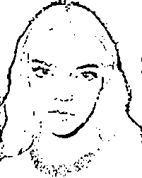
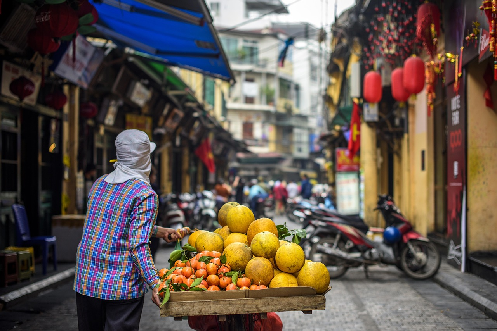

Обведите всех людей на кадре прямоугольными баундбоксами. Кликните на изображение и потяните, чтобы нарисовать рамку; тяните за угловые маркеры, чтобы изменить размер; нажмите × на рамке, чтобы удалить.
1 / 50
